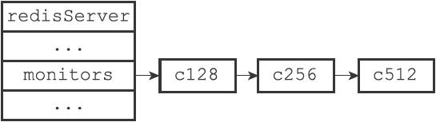
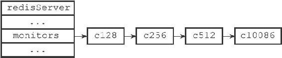

24.1 成为监视器
发送MONITOR命令可以让一个普通客户端变为一个监视器，该命令的实现原理可以用以下伪代码来实现：
def MONITOR():
#
打开客户端的监视器标志
client.flags |= REDIS_MONITOR
#
将客户端添加到服务器状态的monitors
链表的末尾
server.monitors.append(client)
#
向客户端返回OK
send_reply("OK")
举个例子，如果客户端c10086向服务器发送MONITOR命令，那么这个客户端的REDIS_MONITOR标志会被打开，并且这个客户端本身会被添加到monitors链表的表尾。
假设客户端c10086发送MONITOR命令之前，monitors链表的状态如图24-2所示，那么在服务器执行客户端c10086发送的MONITOR命令之后，monitors链表将被更新为图24-3所示的状态。

图24-2 客户端c10086执行MONITOR命令之前的monitors链表

图24-3 客户端c10086执行MONITOR命令之后的monitors链表